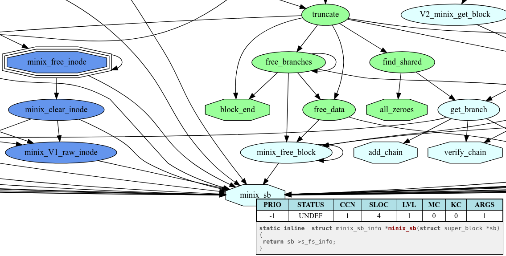

Глава 6. Дедуктивная верификация модуля безопасности ядра ОС Linux
Как уже отмечалось, модуль LSM является ключевым звеном механизма управления доступом ОССН в целом. По этой причине его верификация является одной из центральных задач верификации механизма управления доступом. Дедуктивная верификация это наиболее точный метод статического анализа программ. Для его применения к некоторому программному модулю помимо соответствующих инструментов верификации требуется наличие формальных функциональных спецификаций этого модуля. В контексте данной работы нам важно иметь не только полные и корректные спецификации модуля LSM, данные спецификации должны соответствовать исходной модели политики безопасности управления доступом в ОССН. Как уже отмечалось в первых главах, автоматический переход от формальной спецификации модели политики безопасности (Event-B спецификации МРОСЛ ДП-модели) к спецификации модели модуля LSM невозможен. В связи с этим предлагается цепочка работ, которая в результате позволяет верифицировать модуль LSM и продемонстрировать его близость к требованиям спецификации исходной модели политики безопасности управления доступом. Эта цепочка выглядит следующим образом:
- на Event-B вручную создается дополнительная модель механизмов безопасности на уровне LSM, содержащая контракты операций интерфейса LSM и инварианты, описывающие гарантируемые свойства безопасности (помимо обычных инвариантов, описывающих корректность данных, используемых операциями LSM);
- соответствие между созданной Event-B спецификацией LSM и Event-B спецификацией МРОСЛ ДП-модели контролируется с помощью экспертизы специалисты по безопасности могут проверить содержательное соответствие между инвариантами безопасности двух спецификаций (эти инварианты должны содержать формулировку по сути одинаковых ограничений с учетом различий в используемых структурах данных). Также проверяется наличие в Event-B спецификации LSM всех механизмов, описанных Event-B спецификации МРОСЛ ДП-модели
(быть может, за исключением ограничений, реализуемых с помощью стандартного для Unix-систем контроля доступа пользователей и групп пользователей), и отсутствие каких-либо значимых способов обхода контроля доступа в спецификации LSM по сравнению со спецификацией МРОСЛ ДП-модели;
- далее осуществляется формальная верификация Event-B спецификации LSM, т. е. проверяется выполнение контрактов и сохранение инвариантов безопасности при выполнении моделирующих интерфейс LSM Event-B событий;
- в дальнейшем контракты событий Event-B спецификации LSM вручную транслируются в контракты этих же операций на языке спецификаций ACSL [52], что позволит верифицировать их выполнение в коде реализации модуля LSM. Корректность трансляции также проверяется при помощи экспертизы;
- в завершение верифицируется код на языке Си модуля LSM, доказывается соответствие реализации модуля LSM его ACSL спецификации.
Верификация моделирующих интерфейс LSM Event-B событий доказывает выполнение требований соответствующих программных контрактов и выполнение общих требований по защите информации (инвариантов безопасности). Далее после трансляции Event-B спецификации LSM в ACSL появляется возможность провести верификацию кода модуля LSM. Результатом такой верификации будет не только доказательство того, что функции LSM выполняют требования, заданные в спецификациях, но и доказательство выполнения общих требований к защите информации (инвариантов безопасности) модуля LSM, поскольку ACSL-спецификация соответствует Event-B спецификации LSM, а из свойства «соответствия» следует сохранение в ACSL-спецификации свойств Event-B спецификации. Это важно, так как в противном случае пришлось бы доказывать сохранение инвариантов безопасности в ACSL-спецификации, а это существенно сложнее, чем в случае Event-B спецификации.
Данная глава посвящена описанию этапов цепочки работ, представленной выше — она раскрывает основные задачи, которые приходится решать по ходу верификации модуля LSM, но сначала дается более подробное описание работы LSM.
6.1. Подсистема LSM. Функционирование модуля безопасности ядра ОС Linux
Ядро Linux разработано на языке Си (стандарт C89 с gnu-расширениями [53]), имеет большой объем кода (более 15 миллионов строк кода для версии v4.14 по оценке программы SLOCCount) и активно развивается на протяжении уже более двадцати лет. Ядро Linux является монолитным, т.е. все его части работают на одном уровне привилегий — в нулевом кольце. При этом ядро является модульным, т.е. позволяет загружать и выгружать отдельные драйверы/модули в процессе своей работы. Всегда остается некоторая часть ядра Linux, которая является резидентной, т.е. она не может быть выгружена: сюда относятся базовые подсистемы, например, планировщик, подсистемы управления памятью и процессами, виртуальная файловая система и др. Одной из таких резидентных подсистем (начиная с версии ядра 2.6.24 [54]) является подсистема безопасности Linux Security Modules (LSM) [55].
Подсистема LSM — это интерфейс, на основе которого могут быть реализованы разнообразные модули безопасности. В дистрибутиве ОС Linux может присутствовать несколько модулей LSM, и при конфигурировании системы администратор выбирает, какой (или какие) из модулей следует использовать. Так, в базовой версии ядра v4.14 представлены системы мандатного контроля доступа SELinux, Smack, Tomoyo, AppArmor.
Интерфейс LSM разрабатывался так, чтобы предоставлять все необходимое для реализации на его основе мандатной системы управления доступом [56]. Следует понимать, что механизм LSM — это прежде всего инструмент для дополнительного ограничения доступа, для реализации дополнительных проверок поверх основных (дискреционного управления доступом — DAC). LSM не может быть использован для того, чтобы заменять собой стандартные проверки прав доступа ядра Linux. LSM не предназначен для реализации каких-либо действий кроме проверок, например, затирания файлов на жестком диске при их удалении (secure_delete). Это является его архитектурными ограничениями. Начиная с версии ядра v4.2, вводится поддержка стековой модели работы модулей безопасности [57], что подразумевает под собой контроль доступа не одним, а несколькими модулями LSM.
Интерфейс LSM состоит из набора указателей на функции. Модуль безопасности должен реализовывать в себе соответствующие функции, зарегистрировать их в ядре при инициализации своей работы. Далее ядро вызывает функции интерфейса в тех участках своего кода, где требуется проверка прав доступа (например, при обработке системного вызова) или происходит выделение соответствующего ресурса (рис. 6.1). Правильность расстановки точек вызова функций интерфейса LSM в ядре анализировалась в [58–61].
Рис. 6.1. Схема работы ядра ОС Linux с модулем LSM
Функции интерфейса делятся на два типа — оповещательные и контрольные. Первые нужны для того, чтобы модуль безопасности ядра знал, что ядро выделило какой-то ресурс, и мог, например, добавить в его поля собственную информацию о метках безопасности (атрибутах). Вторые — проверяют возможность доступа и возвращают код результата, например EACCES, EPERM (в случае, если доступ запрещен). Ядро анализирует результат обработки каждого из контрольных вызовов и продолжает обработку системного вызова или прекращает ее.
Интерфейс LSM избыточен в том смысле, что контрольные и оповещательные вызовы дублируются на разных уровнях абстракции. Например, права доступа к файлам можно проверять как права доступа к определенном объекту (inode, dentry) или как права доступа по определенному пути. Разные модули безопасности реализуют эти проверки по-своему (например, SELinux использует проверки inode, AppArmor — проверки по пути).
Интерфейс LSM содержит в себе большое число функций (более двух сотен). Модулю безопасности не обязательно реализовывать их все. Если модуль безопасности не реализует какую-то оповещательную функцию, то он не будет знать о наступлении какого-то события в ядре, если контрольную, то ядром будет считаться, что доступ модулем LSM разрешен.
Ядро может быть сконфигурировано для работы в многопроцессорном режиме, в таком случае каждый системный вызов обрабатывается в отдельном потоке ядра, и в коде модуля безопасности LSM одновременно могут вызываться разные обработчики (соответственно, требуется синхронизация для работы с разделяемыми данными). Дополнительно необходимо заметить, что синхронизация также требуется, если ядро собрано в режиме вытеснения. В рамках данной редакции мы всегда полагаем, что ядро сконфигурировано для работы в одноядерном режиме и без механизма вытеснения ядерного кода.
Сам модуль безопасности может вызывать код подсистем ядра (рис. 6.2), запрашивая какие-то данные через функции (и в процессе работы этих функций управление опять может вернуться в модуль LSM, пройдя таким образом цикл по графу вызовов функций), вызывать какие-то библиотечные функции.
То есть модуль безопасности, реализующий интерфейс LSM, как вызывается ядром Linux, так и сам активно вызывает функции ядра. Однозначным образом предсказать статическими методами, каким будет граф потока управления при обработке, например, системного вызова, не всегда возможно. В отдельных случаях подобные «запутанные» потоки управления могут приводить к взаимным блокировкам [62].1
При обработке одного системного вызова может вызываться несколько функций интерфейса LSM. Рассмотрим пример, где происходит системный вызов open для открытия файла testfile на чтение. Файл testfile расположен в том же каталоге, что и программа, его открывающая. Можно увидеть (табл. 6.1), что во время обработки данного системного вызова интерфейс LSM вызывается 6 раз (3 оповещательных и 3 контрольных вызова).
Рис. 6.2. Взаимодействие модуля безопасности с компонентами ядра ОС Linux
В ядре системный вызов open раскрывается в вызов функции do_open, из нее управление передается в do_filp_open и затем в path_openat. В последней сначала через серию вызовов контрольного интерфейса inode_permission с флагом MAY_EXEC осуществляется проверка прав доступа к родительскому каталогу файла (link_path_walk). После этого управление передается в vfs_open, do_dentry_open. В последней осуществляется вызов контрольного интерфейса file_open. Затем в зависимости от типа файла и файловой системы вызывается специальный обработчик операции. Для файлов ext4 — это ext4_file_open. В нем осуществляются специфичные для формата файловой системы действия. Для каталогов ext4 — это ext4_dir_open. В ext4_dir_open не производится никаких проверок, за исключением случаев, когда файловая система зашифрована.
На данном примере можно увидеть, что при обработке системного вызова ядро Linux сначала выделяет пустой файловый дескриптор и дает модулю безопасности записать в него свои метаданные. Затем происходит проверка прав доступа к родительскому каталогу открываемого файла (флаг MAY_EXEC для открытия каталога). После происходит аллокация структуры индексного дескриптора, о чем сообщается модулю безопасности. Далее происходит связывание структур индексного дескриптора со структурой dentry. Если бы данный файл к настоящему моменту использовался другими программами, то двух последних действий могло бы и не произойти. Затем происходит проверка доступа к индексному дескриптору файла testfile на чтение. То же действие повторяется на уровне файлового дескриптора.
Таблица 6.1. Системный вызов open(“testfile”, O_RDONLY). Последовательность вызовов функций интерфейса LSM при его обработке. Ядро Linux v4.14
| Функция интерфейса LSM |
Точка вызова ядра функции интерфейса |
Описание функции точки вызова |
Параметры LSM | Описание параметров |
|---|---|---|---|---|
| file_alloc_security (оповещательная) |
get_empty_filp (fs/file_table.c) |
Выделение структуры файла для процесса | file=0xc445fd80 | Структура file представляет собой открытый файловый дескриптор |
| inode_permission (контрольная) |
_inode_permission (fs/namei.c) |
Проверка прав доступа к inode | inode=0xc6b57764 mask=0x81 |
Структура inode служит в ядре для внутреннего представления файлов. Может быть несколько файловых дескрипторов file, указывающих на один и тот же inode. Флаги параметра маски: MAY_EXEC | MAY_NOT_BLOCK |
| inode_alloc_security (оповещательная) |
inode_init_always (fs/inode.c) |
Инициализация структуры inode |
inode=0xc69c6134 | |
| d_instantiate (оповещательная) |
d_instantiate (fs/dcache.c) |
Связывание структуры inode и dentry | dentry=0xc6a98e40; inode=0xc69c6134 |
Структура dentry необходима для связывания структуры inode с именем файла, поддержания иерархии файлов в каталоге, и связи с родительскими каталогами |
| inode_permission (контрольная) |
_inode_permission (fs/namei.c) |
Проверка прав доступа к inode | inode=0xc69c6134; mask=0x24 |
Флаги параметра маски: MAY_OPEN | MAY_READ |
| file_open (контрольная) |
do_dentry_open (fs/open.c) |
Проверка прав доступа к file | file=0xc445fd80; cred=0xc44a8c40 |
Структура cred содержит в себе субъект/объектные метки/данные процесса в зависимости от того, в каком качестве выступает процесс. В данном случае как субъект доступа |
Рис. 6.3. Схема процесса верификации кода модуля LSM
На этом небольшом примере можно увидеть, что некоторые проверки выполняются на разных уровнях представления: индексные дескрипторы служат для описания метаданных файла (есть взаимно-однозначное соответствие данных на диске и индексного дескриптора), структура file является дескриптором открытого файла у процесса и ссылается на индексный дескриптор. Также можно увидеть, что цепочка вызовов функций LSM сильно зависит от текущего состояния ядра и аргументов системного вызова. Например, если бы файл testfile был расположен в другом каталоге, то появились бы дополнительные контрольные вызовы inode\_permission и могли бы появиться оповещательные вызовы inode\_alloc\_security и d\_instantiate .
Исходя из описанной структуры модуля LSM и схемы его интеграции с ядром ОС Linux разработка спецификаций и верификация программного кода модуля LSM состоит из следующих работ (рис. 6.3):
- разработка спецификаций для функций верхнего уровня (интерфейсных функций модуля);
- последовательный перебор всех интерфейсных функций;
- если рассматриваемая функция не вызывает функций, которые ранее не были верифицированы, то она верифицируется;
- если такие функции имеются, то необходимо разработать для них спецификации и доказать их корректность (иногда приходится ограничиваться только разработкой спецификации), а после этого вернуться к верификации данной функции.
6.2. Дедуктивная верификация кода на языке Си
Задача дедуктивной верификации состоит в доказательстве того, что в предположении, что программа получает на вход допустимые данные (предусловие выполнено), она выдает результат, отвечающий требованиям к результату (постусловие выполнено). Кроме того, требуется также доказать, что программа завершается, т. е. не «зацикливается» и не содержит ошибок (неопределенного поведения). Ограничения на входные данные и требования к результату называются спецификацией программы. Кратко будем говорить, что задача дедуктивной верификации состоит в доказательстве соответствия реализации функции (программы) ее спецификации. По сути для верификации Си-программ мы будем использовать тот же подход, который уже использовался для верификации Event-B спецификаций, однако в случае Си-программ в ядре ОС приходится использовать другие инструменты и учитывать особенности этого языка программирования, модели памяти Си-программ и используемых (библиотечных) функций ядра ОС.
Методы формальной верификации имеют долгую историю развития. Теоретические основы были заложены в работах Флойда (методы Флойда: метод частичной корректности и метод завершимости) [63] и Хоара [64]. Первой системой формального доказательства принято считать разработанную в 1969 году Дж. Кингом, студентом Р. Флойда, программу [65]. С тех пор появилось большое число систем формального доказательства программ, например [66–71].
Методы формальной верификации, не имевшие широкого применения в индустрии и развивавшиеся в стенах университетов и исследовательских институтов, в последнее время обретают интерес в реальных применениях [72, 73]. Это объясняется несколькими причинами: развитием инструментов верификации, развитием решателей для автоматического доказательства условий верификации, возрастающей стоимостью ошибки в массовом программном обеспечении (операционные системы, программы для работы с электронными деньгами, средства коммуникации, системы управления аппаратными комплексами, авиационной, автомобильной техникой и т. д.).
Однако из-за того, что инструменты верификации не имеют еще широкого применения за пределами академической среды, при попытках их применения к коду реальных программных систем обнаруживаются существенные недостатки и ограничения [74, 75] такие, как плохая документация, неполная поддержка языка Си, отсутствие поддержки расширений компиляторов, слабость моделей памяти, лежащих в их основе [76, 77], неудобство работы с большими объемами кода, отсутствие генерации отчетов о покрытии спецификациями кода и другого рода сопроводительной информации.
Для того чтобы провести дедуктивную верификацию нужно иметь спецификацию программы. Если спецификации нет (или она не полна), ее нужно разработать. Спецификации пишутся на специальных декларативных языках, как правило, в их математической основе лежит логика первого порядка. Существуют языки программирования (SPARK [68], Whiley [69], Dafny [70], ADA 2012 [78], Eiffel [79]), которые поддерживают синтаксические конструкции для разработки спецификаций. Языки программирования (Си, Java), которые создавались без учета потребности в разработке формальных спецификаций на код, интегрируют их в код либо посредством специальных расширений языка (использования компиляторных атрибутов), либо с использованием препроцессорного языка (макросы, которые при компиляции раскрываются в пустые конструкции, но статически обрабатываются другими инструментами), либо посредством комментариев специального вида.
В данной работе мы следуем методу дедуктивной верификации Флойда-Хоара [63, 64]. Спецификации состоят из контрактов (предусловие и постусловие) к функциям, инвариантов и оценочных функций на циклы, инвариантов на типы данных и глобальные переменные, аксиоматических теорий. В предусловии описываются ограничения на аргументы функции и состояние глобального контекста, которому должно соответствовать выполнение программы на момент вызова данной функции, чтобы она отработала корректным образом. В постусловии описывается требование к результату функции (возвращаемому значению) и к побочному эффекту, состоянию измененных данных программы (переменных и областей памяти глобального контекста) на момент завершения данной функции.
Инструменты на основе спецификаций, исходного кода и собственных моделей (например, памяти и целых чисел) порождают набор условий верификации. Условие верификации представляет собой логическую формулу. Например, состоящую из предусловий контракта и цепочки условий, определяющих конкретный путь в коде, в предпосылках формулы и ограничения на неравенство нулю делителя в следствии. Если показать общезначимость данной формулы, то можно утверждать, что на любых входных данных в этой функции, удовлетворяющих предусловию и позволяющих дойти до деления этим путем по коду, никогда не произойдет ошибки деления на ноль. Для верификации функции требуется доказать общезначимость всех условий верификации. После этого можно утверждать, что функция полностью соответствует своему контракту и не содержит определенных классов ошибок.
Для доказательства постусловий циклы аннотируются инвариантами — логическими условиями, которые должны соблюдаться на каждой итерации цикла (доказывается статически по индукции). Для доказательства завершимости циклов им ставится в соответствие оценочная функция — монотонно убывающая функция, ограничивающая число итераций цикла, которое может произойти до гарантированного завершения данного цикла.
Хотя математический аппарат для дедуктивной верификации достаточно прост, его использование в применении к реальным программам требует инструментальной поддержки. В следующей главе описываются соответствующие инструменты.
6.2.1. Инструментарий
В данной главе описывается опыт дедуктивной верификации LSM при помощи комплекса инструментальных средств AstraVer Toolset [80], который был создан в ИСП РАН. AstraVer Toolset включает в себя набор инструментов, предназначенных для дедуктивной верификации Си-программ, основными среди которых являются Frama-C [81], Why3 [71] и AstraVer Plugin [76]. Frama-C — это платформа статического анализа программ на языке Си, разработанная совместно двумя французскими организациями: CEA LIST (Software Reliability Laboratory) и INRIA Saclay. AstraVer Plugin является ответвлением (форком) плагина Jessie [82] и использует платформу Why3. Спецификации для AstraVer пишутся на языке ACSL [52], который позволяет разрабатывать спецификации различного уровня, от абстрактных до низкоуровневых. Инструменты Frama-C и Why3 из AstraVer Toolset адаптированы для работы с AstraVer Plugin и имеют дополнительную функциональность, включающую в себя поддержку лемма-функций для упрощения доказательства лемм, поддержку переключения моделей работы с целыми числами для конкретных операций, импорт лемм, поддержку произвольного порядка определений логических сущностей, расширенную поддержку работы со строками на уровне спецификаций, поддержку offsetof и container_of, массивов нулевого размера и другие улучшения, делающие возможным использование инструментов дедуктивной верификации в работе с реальным кодом.
Why3 — это платформа для дедуктивной верификации. В связке с Frama-C она используется как интерактивная среда для работы с доказательством условий верификации. Также она предоставляет среду интеграции для запуска различных автоматических и интерактивных решателей, обрабатывает протоколы доказательств, дает возможность применять различные трансформации для логических формул (разбиения, подстановки, инверсии и т. д.). Why3 позволяет использовать большое число различных решателей: Coq, Alt-Ergo, CVC3, CVC4, Yices, Z3 и т. д.
Вся связка инструментов дедуктивной верификации работает следующим образом (рис. 6.4). Исходный код со спецификациями поступает в Frama-C, который преобразует их в промежуточное представление С Intermediate Language (CIL). Далее плагин Astra-Ver, подключая модели памяти и целых чисел, преобразует CIL в модель на языке WhyML. На основе этой модели Why3 генерирует условия верификации. Они выводятся автоматически на основе правил формального вывода, спецификаций и формальных моделей языка программирования (к ним относятся модели памяти, модели целых или действительных чисел, модель битовых векторов и др.). Why3 дает возможность проверять их выполнимость либо посредством запуска автоматических решателей, либо при помощи интерактивной среды доказательства.
Рис. 6.4. Инструментарий дедуктивной верификации программ на языке Си
6.2.2. Пример спецификаций на языке ACSL
Перед тем как рассмотреть пример спецификации на языке ACSL, кратко опишем общую схему разработки и размещения спецификаций в программе на Си. Спецификации располагаются вместе с кодом на языке Си и оформляются как псевдокомментарии, помеченные знаком «@»:
/*@ ... */ или //@ ...Спецификации могут описывать свойства типов данных, функций, констант и переменных. В спецификационных выражениях могут использоваться обращения к элементам специфицируемой программы: типы данных, константы, переменные, макросы и т. д. Помимо этого в спецификации могут использоваться дополнительные конструкции, например (\forall) и (\exists) — кванторы всеобщности и существования, — встроенная функция для проверки корректности выделенной памяти и др. В спецификации могут быть введены спецификационные переменные ghost, логические функции и предикаты, ими можно пользоваться только в спецификационных выражениях.
Рассмотрим, как может выглядеть спецификация на функцию strcat. Напомним, что данная функция осуществляет конкатенацию двух строк dest и src.
Спецификационный контракт функции, как правило, состоит из следующих элементов: предусловия, постусловия и рамочных условий (которые в данном случае можно рассматривать как разновидность постусловий). Предусловия начинаются с ключевого слова requires, постусловия — ensures, рамочные условия — assigns. В спецификациях по умолчанию используется неограниченный тип integer ( \mathbb{Z} ) для целых чисел (в отличие от ограниченных типов в языке Си).
Предусловия описывают требования к значениям аргументов функции к глобальному контексту в момент времени «до выполнения функции». В предусловиях невозможно сформулировать условия на возвращаемый результат функции и на ее побочные действия.
Постусловия вычисляются на момент времени «после выполнения функции» и описывают требования к возвращаемому результату и глобальному контексту. В постусловии есть специальная конструкция , которая описывает возвращаемое функцией значение. В постусловиях можно обратиться к состоянию памяти «до выполнения функции» через временную метку Old и конструкцию .
Рамочные условия описывают память, в которую функция может осуществлять запись. Таким образом, если описываемое множество является пустым, то функция — чистая и не содержит побочных эффектов. Также на уровне рамочных условий может задаваться статус аллокации регионов памяти. В данном примере он не описывается, так как функция strcat не выделяет и не освобождает память.
Дополнительно в контракте возможно описать условия завершимости функции, но по умолчанию всегда считается что функция завершима, и порождается соответствующее условие верификации для доказательства этого.
В контракте функции strcat (листинг 6.1) имеется 4 предусловия. В первых двух говорится, что входящие указатели src и dest указывают на корректно выделенные участки памяти подходящего размера, имеют маркеры конца строки. Это делается через предикат valid\_str , определение которого приведено ниже. В третьем предусловии говорится, что сумма двух строк не превышает максимально допустимый размер для типа size\_t . В следующем предусловии говорится, что указатель dest указывает на корректно выделенный участок памяти, размер которого достаточен для того, чтобы вместить обе строки.
Листинг 6.1. Контракт функции strcat lib/string.c
/*@ requires valid_str(src);
requires valid_str(dest);
requires strlen(dest)+strlen(src) ≤ SIZE_MAX;
requires \valid(dest+(0..strlen(dest)+strlen(src)));
assigns dest[strlen(dest)..strlen(dest)+strlen(src)];
ensures \result ≡ dest;
ensures valid_str(\result);
ensures ∀ ℤ i; 0 ≤ i < strlen{Old}(dest) ⇒
\old(dest[i]) ≡ \result[i];
ensures ∀ ℤ i;
strlen{Old}(dest) ≤ i < strlen{Old}(dest)+strlen(src) ⇒
src[i - strlen{Old}(dest)] ≡ \result[i];
ensures strlen(\result) ≡ strlen{Old}(dest) + strlen(src);
*/
char *strcat(char *dest, const char *src);В рамочном условии assigns описывается участок памяти, за пределами которого функция strcat ничего не меняет. В данном случае он соответствует участку памяти, куда будет копироваться строка src.
Если не задавать постусловия, то по умолчанию всегда будет считаться, что постусловие равно истине при любом результате функции (вырожденные постусловия). Контракта без постусловий и рамочных условий будет достаточно, чтобы доказать отсутствие определенных ошибок в исходном коде функции (например, деление на ноль, выход за границу массива и др.). Так, если посмотреть на спецификации к функции TimSort, которые использовались для того, чтобы показать, что в реализации OpenJDK [83] есть ошибка, то можно увидеть, что в некоторых случаях используются вырожденные постусловия (ensures ). Если же понадобится доказать корректность функции, вызывающую данную, то с большой вероятностью потребуется сформулировать постусловия для нее.
На практике встает вопрос полноты постусловий: например, можно описать, что функция возвращает отсортированный массив, но не уточнить, что содержимое входного и выходного массивов совпадает. В таком случае функция, всегда возвращающая массив «[1, 2, 3]», формально отвечает требованиям «отсортированности» результата. Не включенное в спецификацию постусловие о связи входных данных и возвращаемого результата в данном случае делает и спецификацию, и соответствующую ей реализацию бессмысленными. Полноту постусловий для верхнего уровня функций сложно гарантировать формальным образом. В рамках нашей работы полнота постусловий этих функций определяется наличием возможности выразить свойства, гарантирующие сохранение инвариантов безопасности.
Листинг 6.1 описывает 5 постусловий. В первом сообщается, что значение возвращаемого указателя совпадает с dest. Во втором постусловии уточняется, что этот указатель — указатель на корректную строку. В третьем условии говорится, что возвращаемая строка начинается с символов входной строки dest (без спецсимвола «конец строки»). Это условие является избыточным и вытекает из рамочного условия assigns. Оно было оставлено для того, чтобы дать подсказку решателям при доказательстве рамочного условия (без этого постусловия они хуже справляются с его автоматическим доказательством). Четвертое условие задает требование ко второй части строки: после символов из dest должны следовать символы из src, иными словами, строка src добавляется к концу dest. Последнее постусловие говорит о том, что длина результирующей строки равна сумме длин исходных.
Контракта функции достаточно, чтобы доказывать корректность функций, вызывающих данную, но может быть недостаточно для того, чтобы доказывать корректность реализации самой функции, в частности, контракта недостаточно, чтобы доказать завершимость функции. Если в теле функции используются циклы, то необходимо дополнительно сформулировать инварианты на цикл и оценочную функцию. Инварианты должны быть сформулированы таким образом, чтобы из них вытекали постусловия. Оценочная функция необходима для того, чтобы доказать завершимость цикла.
Реализация функции strcat (см. Листинг 6.2) содержит два цикла. Первый — для определения конца строки dest, второй — для копирования строки src в конец dest.
Листинг 6.2. Инварианты и оценочная функция для strcat
char *strcat(char *dest, const char *src)
{
char *tmp = dest;
//@ ghost size_t dest_len = strlen(tmp);
/*@ loop invariant tmp ≤ dest ≤ tmp + dest_len;
loop invariant valid_str(dest);
loop invariant ∀ ℤ i;
0 ≤ i < dest - tmp ⇒ tmp[i] ≢ '\0';
loop variant dest_len - (dest - tmp);
*/
while (*dest)
dest++;
//@ assert *dest ≡ '\0';
//@ assert dest ≡ tmp + dest_len;
//@ ghost char *osrc = src;
//@ ghost char *mdest = dest;
/*@ loop invariant osrc ≤ src ≤ osrc + strlen(osrc);
loop invariant mdest ≤ dest ≤ mdest + strlen(osrc);
loop invariant src - osrc ≡ dest - mdest;
loop invariant valid_str(src);
loop invariant ∀ ℤ i; 0 ≤ i < src - osrc ⇒
mdest[i] ≡ osrc[i];
loop invariant ∀ ℤ i; 0 ≤ i < dest - tmp ⇒
tmp[i] ≢ '\0';
loop assigns mdest[0..strlen(osrc)];
loop variant strlen(osrc) - (src - osrc);
*/
while ((*dest++ = *src++) != '\0')
;
//@ assert ∀ ℤ i; 0 ≤ i < dest_len ⇒ \at(dest[i],Pre) ≡ tmp[i];
//@ assert dest[-1] ≡ '\0' ∧ src[-1] ≡ '\0';
//@ assert dest - 1 ≡ tmp + dest_len + strlen(osrc);
//@ assert strlen(osrc) ≡ src - osrc - 1;
/*@ assert ∃ size_t n;
tmp[n] ≡ '\0' ∧
\valid(tmp+(0..n)) ∧
n ≡ (size_t) (dest_len + strlen(osrc));
*/
/*@ assert valid_str(tmp) ∧
(tmp[(size_t)(dest_len + strlen(osrc))] ≡ '\0') ∧
(∀ ℤ i; 0 ≤ i < (size_t)(dest_len + strlen(osrc)) ⇒ tmp[i] ≢ '\0');
*/
//@ assert strlen(tmp) ≡ (size_t) (dest_len + strlen(osrc));
return tmp;
}Спецификационные конструкции ghost используются для «запоминания» значения переменных в определенный момент времени. При этом в первой спецификации в ghost-переменную сохраняется результат вычисления логической функции strlen. Спецификации assert в данном примере необходимы для того, чтобы дать «подсказки» решателям при автоматическом доказательстве условий верификации. На каждый assert порождаются соответствующие условия верификации, доказательство следующих за ними по коду утверждений происходит, отталкиваясь от них в предпосылках.
Для первого цикла написано три инварианта. В первом утверждается, что указатель dest в рамках цикла изменяется в определенных пределах. Во втором утверждается, что dest не перестает указывать на корректуню строку. В последнем говорится, что маркер конца строки не встречался до конца массива.
Оценочная функция на цикл должна на каждом следующем шаге итерации возвращать результат меньший, чем на текущем. Ее доменом должно быть фундированное множество (множество, в котором не существует бесконечной строго убывающей последовательности) натуральных чисел с нулем.
Для второго цикла первые два инварианта описывают диапазоны изменения указателей src и dest. В третьем инварианте утверждается, что указатели src и dest на каждой итерации сдвигаются на равное число байтов. В четвертом инварианте описывается то, что src по-прежнему указывает на «валидную» строку на каждой итерации данного цикла. В пятом инварианте утверждается, что все «пройденные» элементы строки src записаны в конец оригинальной строки dest. Из этого инварианта вытекает предпоследнее постусловие в контракте функции. В последнем инварианте записано, что маркер конца строки не попадает в результирующую строку до тех пор, пока не будет скопирован весь массив src. Этот инвариант нужен для доказательства последнего постусловия.
Описанных инвариантов и оценочных функций достаточно для доказательства полной корректности функции strcat относительно ее контракта, модели памяти и модели целых чисел. Для того чтобы решатели могли доказать все условия верификации в автоматическом режиме, в тело функции были добавлены логические утверждения в виде конструкций assert.
При разработке спецификации использовались предикат valid\_str и логическая функция strlen. Листинг 6.3 содержит их определения. Помимо этого, в нем приведены некоторые леммы на поведение valid\_str и strlen. Леммы используются решателями при доказательстве условий верификации. Сами леммы, как правило, доказываются с помощью среды интерактивного доказательства Coq.
Листинг 6.3. Логическая функция strlen
/*@ axiomatic Strlen {
predicate valid_str(char *s) =
∃ size_t n;
s[n] ≡ '\0' ∧ \valid(s+(0..n));
lemma valid_str_shift1:
∀ char *s;
*s ≢ '\0' ∧
valid_str(s) ⇒
valid_str(s+1);
lemma valid_str_strend:
∀ char *s;
\valid(s) ∧ *s ≡ '\0' ⇒
valid_str(s);
logic size_t strlen(char *s) =
s[0] ≡ '\0' ?
(size_t) 0 : (size_t) ((size_t)1 + strlen(s + 1));
lemma strlen_before_null:
∀ char* s, ℤ i;
valid_str(s) ∧
0 ≤ i < strlen(s) ⇒ s[i] ≢ '\0';
lemma strlen_at_null:
∀ char* s;
valid_str(s) ⇒ s[strlen(s)] ≡ '\0';
lemma strlen_shift1:
∀ char *s;
valid_str(s) ∧ *s ≢ '\0' ⇒
strlen(s) ≡ 1 + strlen(s+1);
lemma strlen_main:
∀ char *s, size_t n;
valid_str(s) ∧
s[n] ≡ '\0' ∧
(∀ ℤ i; 0 ≤ i < n ⇒ s[i] ≢ '\0') ⇒
strlen(s) ≡ n;
}
*/Предикат valid\_str утверждает, что существует некоторый индекс n, по которому в строке содержится нулевой байт (маркер конца строки). Также утверждается, что память от начала строки до этого индекса п должна ранее быть корректным образом выделена (). Если этот предикат выполнен, то строка считается корректной (валидной). Дополнительно в этом предикате можно было бы потребовать, что до индекса n в строке str нет значений с нулевым байтом. В лемме valid\_str\_shift1 утверждается, что предикат valid\_str сохраняется для строки, сдвинутой в право на один байт, если в текущем не содержится конца строки. Эта лемма используется для доказательства второго и четвертого инвариантов в циклах strcat. Лемма valid\_str\_strend утверждает, что из того, что указатель указывает на валидный байт памяти, в котором расположен ноль, следует выполнение предиката valid\_str . То есть пустая строка — валидна.
Листинг 6.3 содержит два определения для функции strlen. Первое (logic) описывает алгоритм вычисления strlen явным образом, используя рекурсию. Второе (лемма strlen_main) задает ее значение неявным образом, т. е. формулирует требование к правильному результату. Лемма strlen_main используется для доказательства последнего постусловия функции strcat, если посмотреть на одно из утверждений assert, то явно видно, что он повторяет структуру предпосылок данной леммы. Лемма strlen_before_null утверждает, что в индексах до strlen не может лежать нулевого байта. В лемме strlen_at_null утверждается, что в строке по индексу strlen должен лежать маркер конца строки. В лемме strlen_shift_1 описывается, как изменяется значение логической функции strlen, если сдвинуть указатель строки на один байт в право.
Таким образом, мы на примере функции strcat из ядра Linux рассмотрели, как могут выглядеть спецификации ACSL. Формальные спецификации на эту и другие библиотечные функции ядра Linux, которые могут использовать модули ядра в своей работе, а также протоколы доказательств к ним были частично опубликованы в рамках AstraVer [84]. Необходимо отметить, что функция
strcat является функцией «нижнего» уровня (по графу вызовов) и в ее спецификации не отражены высокоуровневые инварианты безопасности, полученные из Event-B спецификации интерфейсов LSM, потому что их к данной функции нет.
6.2.3. Текущие ограничения стека инструментов Frama-C/AstraVer
Инструменты верификации на текущий момент имеют ограничения на работу со следующими конструкциями языка Си:
- goto разрешены безусловные переходы, направленные только вперед по коду, не передающие управление во вложенные блоки кода;
- преобразование из целочисленных типов в указатели и обратное преобразование не поддерживаются;
- преобразования между произвольными указателями не поддерживаются. Исключение составляют преобразование из void * в указатель другого типа, преобзования указателей на целые числа друг в друга, преобразования указателя на поле структуры в указатель на объемлющую структуру (container_of, offsetof), преобразование указателя на union к указателю на одно из полей union структуры и другие частные случаи;
- функции, являющиеся обертками к вызову функций, которые возвращают void * (пример: void * myalloc() {return kmalloc()}), не поддерживаются;
- операции с union-структурами данных лишь частично поддерживаются нельзя производить операции над одним типом данных в union, а после работать с этими же данными через другой тип;
- функции с переменным числом аргументов не поддерживаются;
- квалификаторы типа volatile и const принимаются, но не учитываются;
- ассемблерные вставки поддерживаются только на уровне разбора синтаксических конструкций, эффект вычислений, описанный вставкой, не учитывается.
6.3. Процесс верификации: работы, планирование, координация
Как и в любом большом проекте (каким, конечно, является ядро Linux), процесс верификации невозможно рассматривать в отрыве от развития и сопровождения целевой системы. Поэтому при верификации модуля безопасности ОССН Astra Linux Special Edition планированию и координации работ по развитию ОССН и по верификации LSM уделялось серьезное внимание. В частности, были проведены работы по согласованию планов и правил разработки кода модуля LSM, о чем подробнее написано ниже.
Размер модуля безопасности составляет более 3 тыс. строк кода на Си. Для составления спецификаций интерфейсных функций LSM требуется не только изучение документации, но и анализ кода ядра. Также требуется разработать спецификации вызываемых из модуля (библиотечных) функций ядра ОС. Некоторые из них должны сами быть верифицированы для того, чтобы разработчик спецификаций был уверен, что их спецификации корректны. Тем самым размер подсистемы, которая должна быть специфицирована и верифицирована, оказывается существенно больше, чем размер собственно модуля безопасности, а это означает, что сроки и трудоемкость верификации измеряются годами и человеко-годами соответственно. Это требует четкого планирования работ, анализа приоритетов и выстраивания последовательности разработки спецификаций и проведения верификации. Еще одним фактором, влияющим на последовательность работ, а также на их трудоемкость, является постоянное развитие инструментов верификации. В предыдущем разделе было описано текущее состояние возможностей инструментов верификации. Так как работы по совершенствованию методов и инструментов идут постоянно, при планировании частных работ следует учитывать не только текущее состояние технологии, но и то, на что можно рассчитывать в ближайшей перспективе. Тогда некоторые работы, которые сейчас требуют чрезмерных усилий, можно отложить на несколько месяцев и получить нужный результат, возможно, несколько позже, но существенно с меньшими затратами. При этом важно понимать, что артефакты верификации в дальнейшем придется сопровождать, поэтому важно учитывать не только трудоемкость собственно верификации, но и трудоемкость дальнейшего сопровождения.
Далее мы описываем отдельные работы, отдельные аспекты планирования работ и некоторые выводы, извлеченные из опыта проекта AstraVer.
6.4. Согласование правил разработки кода
Код модуля безопасности, являясь частью самого ядра, в существенной мере наследует стиль кода, принятый в сообществе разработчиков ядра ОС Linux. Код ядра не ограничен рамками какого-либо «безопасного» подмножества языка Си, например [85]. Реализация модуля написана с целью обеспечения оптимального времени работы, а не для упрощения задач верификации. В модуле LSM активно используются расширения стандарта языка Си-99, которые используются сообществом разработчиков ядра ОС Linux (диалект поддерживается компилятором GCC). Более того, так как модуль безопасности опирается на кодовую базу ядра, то использование некоторых конструкций языка, паттернов и расширений заранее навязано, и не всегда имеется возможность от них отказаться.
Трудоемкость верификации в значительной степени зависит от сложности верифицируемого кода. Анализ сложности, в частности, при помощи соответствующей оценки, позволяет указать на наиболее сложные фрагменты программ. Знание о «сверх-сложных» фрагментах дает возможность провести их анализ вместе с разработчиками и, как правило, упростить код, что дает общий выигрыш: разработчики получают код, который проще сопровождать, а инженеры по формальному анализу получают код, с которым могут работать. Некоторые подробности об использованных методах измерения сложности программ приведены ниже.
В связи с этим работам по верификации модуля LSM предшествует предварительная фаза изучения особенностей его реализации и сопоставления стиля кода с имеющимися возможностями инструментов верификации. По результатам предварительного анализа с разработчиками кода модуля безопасности устанавливается соглашение по используемым правилам разработки.
6.4.1. Работа с макросами
Конструкции препроцессора, являясь отдельным языком, требуют самостоятельного рассмотрения. Спецификации на языке ACSL не могут быть написаны на макросы языка Си: инструменты работают уже с препроцессированным кодом. При верификации кода модуля каждый макрос требует анализа, так как:
некоторые из макросов раскрываются в простое логическое условие и могут использоваться в спецификациях функций, так как они не нарушают синтаксиса языка спецификаций ACSL;
часть раскрывается в побочные действия, специфицировать которые не требуется (например, likely, unlikely), часть в инициализацию структур данных (ATOMIC_INIT). Некоторые из этих макросов могут быть заменены на простое раскрытие своих аргументов (#define likely(x) (x));
часть раскрывается в последовательность вызовов функций. В данном случае необходимо написать спецификации на эти функции;
некоторые макросы целесообразнее переопределить как функции, для того чтобы стало возможным описать их поведение. Не для всех макросов это возможно.
После анализа макросов:
- составляются списки макросов, которые могут использоваться в спецификациях;
- переопределяются те, которые при верификации можно заменить несложными заглушками;
- переписываются на встраиваемые (inline) функции те, корректность которых нужно доказать;
- на основании анализа исходных текстов совместно с разработчиками формулируются правила написания макроопределений, которые позволят упростить верификацию последующих версий модуля LSM.
6.4.2. Разработка спецификаций
Как уже упоминалось, при дедуктивной верификации разработка спецификаций выполняется для всех функций модуля безопасности и, если необходимо, для вызываемых из них функций ядра (см. рис. 6.3). При дедуктивной верификации разработка спецификаций ведется для всех функций модуля безопасности. Спецификационные контракты разрабатываются для всех функций ядра, которые вызываются модулем. Доказательство корректности производится только для функций модуля и некоторых библиотечных функций ядра. Таким образом, результатом работы является набор спецификаций с протоколами доказательств для всех функций модуля ядра безопасности, набором контрактов для использующихся модулем функций ядра без доказательств. Также без доказательств остается соблюдение корректности предусловий ядром в точках вызова функций модуля безопасности (предусловия для LSM-интерфейса).
6.4.3. Планирование работ. Оценка сложности
Код функции не может быть верифицирован на соответствие ее спецификации, пока не специфицированы все функции, которые вызывает данная. Соответственно, процесс верификации кода идет снизу-вверх по графу вызовов.
Для планирования работ желательно иметь возможность автоматического построения графа вызовов. Для решения этой задачи авторами был разработан инструмент, который строит карту исходного кода на основе графа вызовов внутримодульных функций (рис. 6.5). Карта наглядно отображает характеристики кода, что упрощает оценку сроков и координацию работ. Так, на карте может отражаться информация об исходном коде функций (число строк, цикломатическая сложность) и о размере спецификаций.

Рис. 6.5. Пример карты исходного кода драйвера файловой системы Minix
При планировании и оценке сроков работ по верификации используются оценки сложности кода. Для чего учитывается размер каждой функции в строках кода (используется SLOCCount), число функций, которые она вызывает, цикломатическая сложность.
Цикломатическая сложность функции позволяет оценить, какое число тестов необходимо, чтобы покрыть все возможные пути исполнения кода в ней.
Опыт показал, что для дедуктивной верификации наибольшую сложность представляют функции с высокой цикломатической сложностью. Национальный институт стандартов и технологий США (NIST) в методике структурного тестирования рекомендует не выходить за пределы сложности в 10–15 единиц [86]. По договоренности с разработчиками подобный код упрощается.
6.4.4. Разработка спецификаций для функций ядра, которые использует модуль безопасности
Модуль безопасности может вызывать код из любых подсистем ядра, как резидентной его части, так и других модулей. Для того чтобы доказать корректность функции модуля, которая вызывает функцию ядра, необходимо иметь контракт последней. В точке вызова проверяется соблюдение предусловий, для последующего кода в формулу вставляются постусловия из контракта.
Для функций ядра, код управления которых уходит «глубоко» в подсистемы ядра, нерационально доказывать корректность: в большинстве случаев это невозможно из-за объемов кода. Для таких функций пишется только спецификационный контракт. Зачастую этот контракт не полный и не описывает всех побочных эффектов, которые производит функция: формализуются только те, которые могут оказать влияние на код модуля безопасности. Для полноты контракта потребовалось бы формализовать работу подсистем ядра: моделировать на уровне спецификаций работу подсистем планировщика, аллокатора и др. Это не представляется возможным ввиду сложности и объемов работы.
Некоторые функции, вызываемые модулем ядра, не зависят от подсистем ядра, и их корректность может быть доказана. Как правило, это библиотечные функции, например функция strcat из прошлого раздела. В таком случае можно разработать полный контракт и верифицировать функцию. Для некоторых библиотечных функций были опубликованы спецификации и протоколы доказательств [84].
6.4.5. Тактика верификации — рабочий цикл процесса
При планировании работ приходится встречаться с различными трудностями, которые вызваны либо сложностью верифицируемого кода, либо ограничениями инструментов верификации, либо отсутствием соответствия между кодом и спецификациями к нему и т. д. В данной главе описывается типовой процесс верификации с изложением часто встречающихся проблем и рекомендациями по их решению или обходу.
При дедуктивной верификации инструментом Frama-C работа с функцией сводится к нескольким шагам:
- Выборка исходного кода функции и связанного с ней кода, предназначенного для анализа. Во время разработки спецификаций требуется обозревать большое число кода единовременно. Постоянные переключения между различными файлами лишь отвлекают разработчика спецификаций. Вместе с тем функция и ее зависимости по коду/данным не всегда локализованы и расположены близко друг от друга. Помимо этого, скорость работы верификационных инструментов существенно зависит от объема кода, на котором они запускаются. Специальным образом из суммы исходных кодов модуля и подключаемых ими заголовочных файлов ядра выделяются все зависимости по коду/данным для рассматриваемой функции. При этом сохраняется оригинальная структура кода функций, включая форматирование и комментарии. Информации, содержащейся в получившихся файлах, достаточно, чтобы компилятор мог собрать объектный файл.
- Формализация спецификаций. Зачастую, первым шагом при разработке спецификаций для уже существующего кода является «прямое» переложение кода реализации на спецификацию. Последние в дальнейшем дополняются и расширяются деталями, формализмами, соответствующими более глубоким и неявным уровням зависимостей и особенностям функционирования. Важно отметить, что разработка спецификаций при помощи простого механического отражения кода реализации без описания содержательного понимания назначения функции ведет к появлению «плохих» спецификаций. К сожалению, формальных критериев, позволяющих различать «содержательные» и «механические» спецификации в общем случае сформулировать не удается.
- Доказательство соответствия кода спецификациям. Для того чтобы осуществить доказательство соответствия кода его спецификациям используются специальные программы — решатели. Эти программы в большинстве случаев способны автоматически доказывать условия верификации, которые генерируются из спецификаций, исходного кода и инструментальных моделей языка Си. Решателям не удается автоматически доказать условие верификации в нескольких случаях: ошибка в спецификации, неполнота спецификации, нехватка временных ресурсов и выделенной памяти для работы решателя (в этом случае можно оставить на уровне спецификаций «подсказки» решателям в виде утверждений assert), ошибка в исходном коде, ошибка в инструментах (неполнота моделей). Часто, если имеется какое-то «сложное» для автоматического вывода утверждение, то оно оформляется в виде соответствующей леммы на языке ACSL. Это делается с той же целью, чтобы помочь решателям провести доказательство автоматически. Соответственно, сформулированные леммы должны доказываться отдельно в специальных инструментах интерактивного доказательства (например, PVS, Coq). Шаги 2 и 3 зачастую «зацикливаются» в том смысле, что сначала разрабатывается спецификация на функцию, затем следует работа с инструментами верификации, попытки доказательства. Далее обнаруживаются ошибки в спецификации и/или исходном коде. И следует итеративная доработка спецификации, исходного кода до того момента, пока соответствие кода его спецификации не становится доказанным.
После верификации функции спецификации переносятся назад на исходный код модуля системы безопасности вместе с правками кода, если они были. На последнем шаге нужно проводить полноценное «передоказательство» на всем коде модуля. Это необходимо, так как спецификации зависимых от нее функций могли уточняться, как и общие с другими функциями предикаты и нужно убедиться в том, что это не влияет на соответствие остальных функций их спецификациям. Также на этом шаге проверяется непротиворечивость самих спецификаций, что нет взаимоисключающих требований к коду.
6.5. Пример
Представленный ниже пример демонстрирует переход от спецификации функции на Event-B к ее спецификации на языке ACSL, которая может быть использована для дальнейшей верификации кода функции. В качестве специфицируемой функции в этом примере выступает функция из интерфейса модуля LSM task\_kill , определяющая допустимость или недопустимость отправки одним процессом другому сигнала в соответствии с текущей политикой безопасности. В МРОСЛ ДП-модели этой функции соответствует правило delete\_subject , завершающее работу сессии по команде из другой сессии.
В качестве исходной модели политики безопасности в этом примере используется специализированная версия МРОСЛ ДП-модели, в которой возможность доступа сессии (процесса) к сущности (информационному объекту, например файлу, директории, сокету и пр.) определяется на основе не ролей, а уровней доступа и целостности сессии и уровней конфиденциальности и целостности сущности. Уровни конфиденциальности и доступа могут выражаться произвольными неотрицательными целыми числами, а уровни целостности могут принимать только два значения — высокое (1) и низкое (0). Доступ сессии к сущности на запись считается возможным тогда и только тогда, когда уровень доступа сессии равен уровню конфиденциальности сущности (при этом более конфиденциальная информация не может попасть в менее конфиденциальную сущность) и уровень целостности сессии не меньше уровня целостности сущности (низкоцелостные сессии не могут изменять высокоцелостные сущности).
Спецификация функции task_kill (так же, как и соответствующего правила delete_subject) написана исходя из сформулированного правила, — поскольку возможность послать сигнал из одного процесса другому означает, что первый процесс способен изменить состояние второго процесса (например, завершить его выполнение), эта возможность должна контролироваться так же, как и доступ на запись. Таким образом, в формальной модели модуля LSM, имеющего функцию task_kill в интерфейсе, ее спецификация утверждает, что доступ на отправку сигнала из одного процесса другому предоставляется тогда и только тогда, когда первый процесс имеет тот же самый уровень доступа, что и второй, и первый процесс имеет не меньший уровень целостности, чем второй. Выражается это общим предикатом AccessIsPermitted(TaskLabel(killer), TaskLabel(task), {WriteA}), проверяющим нужные соотношения между уровнями доступа и целостности процессов killer и task при выдаче доступа на запись.
Рассмотрим Event-B спецификацию для LSM-интерфейса task-kill и ACSL-спецификацию реализации функции соответствующей task_kill в некотором модуле безопасности. Заметим, что пример не является частью какой-либо операционной системы, многие детали, которые в реальной системе обязательно должны присутствовать, здесь опущены. Назовем функцию из модуля безопасности mylsm_kill_permission.
Контрольная функция task_kill разрешает либо запрещает посылать сигнал kill процессу (системный вызов kill) в зависимости от прав доступа процесса.
event task_kill
any task killer
where
@grd1 task ∈ CurTasks
@grd2 killer ∈ CurTasks
@grd3 AccessIsPermitted((TaskLabel(killer))
(TaskLabel(task))
({WriteA})) = TRUE
then
@act1 TaskTaskAccess(killer) :=
TaskTaskAccess(killer) <+ {task ↦ {WriteA} ∪ TaskTaskAccess(killer)(task)}
endСобытие task_kill в спецификации Event-B имеет два входных аргумента:
- task процесс, которому посылается сигнал kill;
- killer процесс, который посылает сигнал kill.
В первых двух предусловиях (@grd1, @grd2) проверяется, что task и killer принадлежат множеству процессов, функционирующих в системе. В @grd3 описывается, что событие возможно, если предикат AccessIsPermitted выполняется. AccessIsPermitted имеет аргументами метку безопасности процесса killer, метку безопасности процесса task, и множество запрашиваемых доступов (в данном случае только доступ на запись WriteA).
Результат события task\_kill описывается в конструкции @act1 — обновляется множество доступов для killer процесса, куда добавляется доступ WriteA к процессу task.
Неформальная документация к функции LSM-интерфейса task_kill выглядит следующим образом:
int (*task_kill)(struct task_struct *task, struct siginfo *info,
int sig, const struct cred *cred);Функция task_kill проверяет доступ перед посылкой сигнала sig процессу task. Параметр info может принимать значение NULL, может быть константой — 1 или же корректным указателем на структуру siginfo. Если параметр info имеет значение 1 или выполнено SI_FROMKERNEL(info), тогда считается, что сигнал посылается ядром и в нормальном режиме функционирования доступ должен быть разрешен. Интерфейс должен возвращать 0, если доступ разрешен.
Параметры интерфейса:
- task структура данных процесса, которому посылается сигнал;
- info информация о сигнале;
- sig значение сигнала (тип SIGHUP, SIGING, SIGKILL …), 0 если сигнал посылать не нужно, просто проверить существование процесса;
- cred структура описывает полномочия процесса, который послал сигнал. Если параметр cred равен NULL, то это означает что сигнал послан текущим (current) процессом.
В данном примере мы отдельно не рассматриваем ситуацию, когда сигнал посылается процессу потоком ядра, а не другим процессом: в примере мы полагаем, что у потока ядра имеется такая же метка безопасности, как и у любого процесса пользовательского пространства. Ситуация, когда параметр сигнала sig равен нулю, в реальности могла бы рассматриваться как запрос доступа на чтение (ReadA). В целях упрощения примера эта ситуация также не рассматривается отдельным образом, а обрабатывается, как и все остальные сигналы.
Рассмотрим, как могла бы выглядеть ACSL-спецификация к данной функции:
/*@ requires valid_task_struct(task);
requires valid_task_struct(current);
requires task ≢ current ∧ task->cred ≢ cred;
requires valid_seclabel(TaskLabel(task));
requires seclabel_get_requires(TaskLabel(task));
requires valid_cred(cred) ∧
(\let sbj_sec = (seclabel_t *)cred->security;
valid_seclabel(sbj_sec) ∧
sbj_sec ≢ TaskLabel(task) ∧
seclabel_get_requires(sbj_sec))
∨
cred ≡ \null ∧
(\let sbj_sec = TaskLabel(current);
valid_seclabel(sbj_sec) ∧
sbj_sec ≢ TaskLabel(task) ∧
seclabel_get_requires(sbj_sec));
assigns TaskLabel(task)->ucnt,
((seclabel_t *)cred->security)->ucnt,
TaskLabel(current)->ucnt;
behavior System:
ensures seclabel_counter_unchanged{Pre,Post}(TaskLabel(task));
ensures cred ≡ \null ⇒
seclabel_counter_unchanged{Pre,Post}(TaskLabel(current));
ensures valid_cred(cred) ⇒
seclabel_counter_unchanged{Pre,Post}((seclabel_t *)cred->security);
ensures \result ≡ 0
∨ \result ≡ -EPERM;
behavior ModelCred:
assumes cred ≢ \null;
ensures \result ≡ 0 ⇔ AccessIsPermitted(
i2m_Label((seclabel_t *)cred->security),
i2m_Label(TaskLabel(task)),
MAY_WRITE);
behavior ModelCurrent:
assumes cred ≡ \null;
ensures \result ≡ 0 ⇔ AccessIsPermitted(
i2m_Label(TaskLabel(current)),
i2m_Label(TaskLabel(task)),
MAY_WRITE);
disjoint behaviors ModelCred, ModelCurrent;
complete behaviors ModelCred, ModelCurrent;
*/
int mylsm_kill_permission(struct task_struct *task,
struct siginfo *info,
int sig, const struct cred *cred);В ACSL-контракте функции mylsm_kill_permission в предусловии требуется корректность (предикат valid_task_struct) структур данных struct task_struct, описывающих процессы. В целях упрощения примера мы будем считать, что процесс не может послать сигнал самому себе (это выражается третьим предусловием). Далее в предусловиях 4 и 5 требуется корректность метки безопасности (valid_seclabel) процесса task, возможность ее захвата (seclabel_get_requires) посредством увеличения счетчика использований. Логическая функция TaskLabel возвращает метку безопасности процесса. Эта функция имеет схожую семантику с отображением TaskLabel в Event-B спецификации. В последнем предусловии рассматриваются две возможные альтернативы: когда метка безопасности извлекается из аргумента cred, описывающего привилегии процесса пославшего сигнал, либо из структуры текущего (current) процесса. Также в обоих ситуациях содержатся требования корректности структур меток (valid_seclabel), возможности захвата метки (seclabel_get_requires) и различия меток безопасности у процесса, посылающего сигнал, и процесса, которому сигнал предназначен. Последнее является следствием упрощения примера, когда процесс не может послать сигнал сам себе.
Далее в рамочных условиях (assigns) описывается участок памяти, в котором функция может изменять значения переменных. В данном случае описываются исключительно счетчики ссылок у структур данных. Другую память функция изменять не может.
Как уже было упомянуто выше, ACSL-спецификации в данной работе включают в себя сущности двух видов. Первые соответствуют типам, переменным, функциям и другим сущностям Event-B спецификации Си-функций. Вторые связаны с конкретной реализацией Си-функций, необходимы для описания деталей, представленных только на уровне реализации, и функциональности, не связанной с аспектами информационной безопасности Event-B спецификации. Для того чтобы привести требования Event-B спецификации и ACSL-спецификации к некоторому «общему знаменателю», сущности первого вида переносятся с Event-B спецификации и требования к их корректности формулируются при помощи тех же условий, которые были сформулированы в Event-B спецификации. Такое приведение выполняется при помощи функций, которые мы далее будем называть implementation-to-model (i2m). Префикс i2m используется в их именах.
В соответствии с этой схемой (разделения на реализационные спецификации и модельные) для всех функций постусловия разделяются на две части: System — требования, соответствующие семантике функции, не связанной с информационной безопасностью, и Model — здесь описываются требования, перенесенные с Event-B спецификации. Для доказательства корректности функции требуется соблюдение всех постусловий. Там, где нет разделения, считается, что нет требований, связанных с моделью.
В System постусловиях (первые три) от функции требуется, чтобы она освобождала счетчики ссылок у ресурсов после того, как они становятся ей не нужны. В последнем говорится, что результатом работы функции может быть либо 0 (доступ разрешен), либо -EPERM (доступ запрещен).
Model постусловия разбиваются на два: ModelCred и ModelCurrent. В ModelCred рассматривается ситуация, когда аргумент cred у функции имеет значение не NULL. Тогда метка безопасности процесса, который послал сигнал, берется из этой структуры. В ModelCurrent метка безопасности берется у текущего процесса. Постусловия из ModelCred и ModelCurrent не могут требоваться одновременно (директива disjoint), но при этом одно из них в зависимости от входных аргументов обязательно должно быть применимо к исходному коду (директива complete). В Model постусловиях утверждается, что функция корректным образом реализована тогда и только тогда, когда соблюдается предикат AccessIsPermitted. В спецификации ACSL предикат AccessIsPermitted принимает в двух первых аргументах метки безопасности модельного типа Label. Для того чтобы преобразовать структуру метки безопасности seclatel_t в модельную Label, используется специальная логическая implementation-to-model функция i2m_Label, которая будет рассмотрена подробно ниже.
В модуле LSM граф вызовов обработки task_kill выглядит следующим образом (рис. 6.6). Функция mylsm_task_permission вызывает несколько функций, одна из которых (access_is_permitted) имеет соответствие в Event-B спецификации (AccessIsPermited). Функции seclabel_get и seclabel_put отвечают за работу со счетчиком использования метки безопасности, они не несут модельной семантики. Функции atomic_inc (атомарная операция инкрементирования счетчика), atomic_dec_and_test (атомарное декрементирования счетчика с проверкой на ноль), kfree (освобождение ранее аллоцированной памяти) также являются функциями ядра.
На рис. 6.6 акцентным цветом отмечены функции, у которых есть модельные спецификации, светлым фоном — функции ядра. Прямоугольником отмечены функции модуля, к которым нет требований Event-B, к ним есть исключительно реализационные требования.
Реализации интерфейса task_kill (функция mylsm_kill_permission) в коде LSM-модуля может выглядеть следующим образом:
Рис. 6.6. Граф вызовов функции mylsm_kill_permission
int mylsm_kill_permission(struct task_struct *task,
struct siginfo *info,
int sig, const struct cred *cred)
{
int rc;
const seclabel_t *slbl_task, *slbl_killer;
/* sig == 0 в примере не рассматривается как MAY_READ доступ */
/* Считается, что метка безопасности всегда инициализирована */
/* Subjective credentials: cred */
if (cred) {
slbl_killer = seclabel_get(cred->security);
} else {
slbl_killer = seclabel_get(current_security()); /* cred */
}
/* Objective credentials: real_cred */
slbl_task = seclabel_get(task_security(task));
rc = access_is_permitted(slbl_killer, slbl_task, MAY_WRITE);
seclabel_put(slbl_task);
seclabel_put(slbl_killer);
return rc;
}Как уже упоминалось, в примере не рассматриваются ситуации, когда сигнал посылается ядром, когда аргумент sig имеет значение 0. В примере считается, что процесс не посылает сигнал себе сам, а метки безопасности у двух рассматриваемых процессов не совпадают на уровне указателей. Также в функции из примера не задействуется информация о сигнале (аргумент info) и типе сигнала (аргумент sig) при проверке доступа.
В функции mylsm_kill_permission сначала считываются метки безопасности процессов. Для того чтобы получить поле security структуры cred текущего процесса, используется макрос current_security. Для получения поля security структуры real_cred процесса task используется макрос task_security. В ядре Linux структура процесса (struct task_struct) имеет два поля для описания привилегий: cred и real_cred. Они имеют тип структуры (struct cred), в которой имеется поле security. В него модуль LSM записывает собственные метки безопасности. Наличие двух полей описания привилегий объясняется тем, что каждый процесс имеет субъектные (cred) привилегии (используется, когда он является субъектом доступа) и объектные (real_cred) привилегии (используется, когда процесс выступает как объект доступа) [87]. В модели нашего примера нет такого разделения для процессов. Соответственно, в реализации появляется требование, чтобы поле security у cred и real_cred для всех процессов вело на одну и ту же метку безопасности. Это условие заложено в предикате корректности структуры valid_task_struct, определение которого будет рассмотрено далее.
Функция seclabel_get увеличивает у меток безопасности счетчик использования на единицу. В функции access_is_permitted осуществляется проверка доступа на запись к процессу task с меткой slbl_task процессом с меткой slbl_killer. Функция возвращает код rc, в котором содержится положительный либо отрицательный вердикт доступа. Функций seclabel_put освобождает ресурсы меток безопасности процессов (декрементируется счетчик использований и вызывает функцию kfree, если счетчик достигает нуля).
На уровне исходного кода видно, что AccessIsPermitted реализуется внутри функции access_is_permitted.
Далее рассмотрим TaskLabel. В Event-B TaskLabel реализуется как отображение:
@TaskLabel_type TaskLabelSubj ∈ CurTasks → LabelsРассмотрим определение логической функции TaskLabel в ACSL:
/*@ axiomatic TaskLabel {
predicate valid_cred(struct cred *cred) =
\valid(cred) ∧
(\typeof(cred->security) <: \type(seclabel_t *)) ∧
valid_seclabel((seclabel_t *)cred->security) ∧
0 < cred->usage.counter;
predicate valid_task_struct(struct task_struct* tsk) =
\valid(tsk) ∧
valid_cred(tsk->cred) ∧
valid_cred(tsk->real_cred) ∧
tsk->cred->security ≡ tsk->real_cred->security;
logic seclabel_t *TaskLabel{L}(struct task_struct *t) =
(seclabel_t *)(t->cred->security);
}
*/Логическая функция TaskStruct имеет простое строение за счет того, что есть требование равенства меток безопасности у субъектных (cred) и объектных (real_cred) привилегий процесса. Помимо этого в последнем листинге приведены определения предикатов valid_cred и valid_task_struct. В предикате valid_cred требуется, чтобы поле security структуры cred всегда в коде рассматривалось как указатель на структуру seclabel_t, несмотря на то, что оно имеет тип
void *, а счетчик использований никогда не был равен нулю. Предикат valid_task_struct требует корректности структур cred и real_cred процесса, а также содержит требование равенства субъектных и объектных меток процесса.
Давайте рассмотрим спецификацию функции AccessIsPermitted Event-B:
Исходя из определения типа функции @AccessIsPermitted_type можно увидеть, что она принимает на вход две метки безопасности и множество запрашиваемых доступов, а возвращает TRUE или FALSE в зависимости от того, возможно ли предоставить доступ или нет.
В самом предикате оставлено описание только доступа на запись. В нашем примере существует только доступ на запись либо пустой доступ.
В спецификации Event-B AccessIsPermitted при доступе на запись проверяется эквивалентность уровней конфиденциальности в метках безопасности, соответствие категорий и наличие не меньшего уровня целостности у запрашивающего доступ субъекта. Уровни конфиденциальности и категории у метки безопасности связаны с мандатным управлением доступом (Mandatory Access Control, MAC), а уровень целостности — с мандатным контролем целостности (Mandatory Integrity Control, MIC).
Определение AccessIsPermitted на ACSL выглядит следующим образом:
/*@ axiomatic AccessIsPermitted {
predicate write_bit(int mode) = (mode & MAY_WRITE);
predicate valid_mode(int mode) = write_bit(mode) ∨ mode ≡ 0;
predicate AccessIsPermitted{L}(Label s, Label o, int mode);
axiom AccessIsPermitted_definition:
∀ int mode, Label s, Label o;
valid_mode(mode) ∧
write_bit(mode) ∧
LabelCnfLevel(s) ≢ LabelCnfLevel(o) ∧
LabelCnfCategorySet(s) ≢ LabelCnfCategorySet(o) ∧
IntLevelGte(LabelIntLevel(s), LabelIntLevel(o))
⇔
AccessIsPermitted(s, o, mode);
}
*/Аксиома @AccessIsPermitted_definition повторяет соответствующее определение из Event-B спецификации с точностью до требования корректности параметра mode. Требование корректности mode в Event-B спецификации выражается аксиомой:
@Accesses_partition Accesses = {WriteA}В инструментах, работающих с ACSL, не поддерживается трансляция инвариантов типов, поэтому предикат valid_mode непосредственно используется в данной аксиоме. В ACSL на уровне языка не поддерживается перегрузка операторов сравнения для модельных типов, поэтому для сравнения уровней целостности используется предикат IntLevelGte.
Предикат AccessIsPermitted определен на модельном типе метки безопасности Label. Для того чтобы преобразовать реальную метку безопасности типа seclabel_t в модельную, используются логические функции i2m, в частности i2m_Label (использование которой мы уже видели ранее). Определения i2m будут рассмотрены чуть позже.
LabelCnfLevel как в Event-B спецификации, так и в ACSL-спецификации используется для того, чтобы получить из метки безопасности уровень конфиденциальности. LabelCnfCategories и LabelCnfCategorySet — для множества категорий. LabelIntLevel — для уровня целостности.
Прежде чем перейти к рассмотрению функции access_is_permitted, нужно рассмотреть определение метки безопасности в исходном коде.
typedef uint8_t ilev_t;
typedef uint8_t lev_t;
typedef uint64_t cat_t;
typedef struct {
lev_t lev;
ilev_t ilev;
cat_t cat;
atomic_t ucnt;
} seclabel_t;Метка безопасности состоит из уровня конфиденциальности (lev), целостности (ilev) и категорий (cat). Дополнительно, в метке содержится счетчик использований ucnt.
predicate valid_seclabel(seclabel_t *l) =
\valid(l) ∧
\offset_min(l) ≡ 0 ∧
0 < l->ucnt.counter ∧
(l->ilev ≡ 0 ∨ l->ilev ≡ 1);В предикате корректности указателя метки безопасности требуется, чтобы счетчик использований не был равен нулю, уровни целостности могли иметь значение только 0 — низкий либо 1 — высокий. Требование offset_min говорит о том, что указатель содержит адрес начала выделенного блока памяти. Это необходимо для соблюдения предусловий функции освобождения памяти kfree.
Перейдем к рассмотрению функции access_is_permitted и ACSL-спецификации для нее. Функция реализует сравнение меток безопасности субъекта (s), запрашивающего доступ к субъекту (o). В нашем примере в иллюстративных целях рассматривается только доступ на запись (MAY_WRITE). Функция access_is_permitted должна вернуть 0 — если доступ разрешен, код ошибки — если запрещен.
/*@ requires valid_seclabel(s);
requires valid_seclabel(o);
requires valid_mode(mode);
assigns \nothing;
behavior System:
ensures \result ≡ 0
∨ \result ≡ -EPERM;
behavior Model:
ensures \result ≡ 0 ⇔ AccessIsPermitted(i2m_Label(s),
i2m_Label(o),
mode);
*/
int access_is_permitted(const seclabel_t *s, const seclabel_t *o, int mode)
{
if (mode & MAY_WRITE) {
if (s->lev == o->lev
&& s->cat == o->cat
&& s->ilev >= o->ilev) {
return 0;
}
}
return -EPERM;
}В ACSL-спецификации функции в предусловиях требуется корректность рассматриваемых меток безопасности и вида доступа. В рамочном условии обозначается, что функция не имеет побочных эффектов. В реализационных постусловиях обозначаются возможные возвращаемые значения. В модельных постусловиях обозначается, что функция разрешает доступ тогда и только тогда, когда предикат AccessIsPermitted выполнен. Из этих двух постусловий следует, что возвращаемый результат может быть равен -EPERM только тогда, когда AccessIsPermitted не соблюдается.
Для того чтобы использовать предикат AccessIsPermitted, определенный на модельном типе метки безопасности Label, в постусловии данной функции используется логическая функция i2m_Label. Она принимает на вход метку безопасности типа seclabel_t, а возвращает модельную метку типа Label.
Перейдем к определению модельной метки безопасности Label:
/*@ axiomatic ModelTypesTheory {
type Label;
type CnfLevel = unsigned int;
type Integrity = LowInt | HighInt;
predicate IntLevelLt(Integrity i1, Integrity i2) =
i1 ≡ LowInt ∧ i2 ≡ HighInt;
predicate IntLevelGt(Integrity i1, Integrity i2) =
i1 ≡ HighInt ∧ i2 ≡ LowInt;
predicate IntLevelLte(Integrity i1, Integrity i2) =
IntLevelLt(i1,i2) ∨ i1 ≡ i2;
predicate IntLevelGte(Integrity i1, Integrity i2) =
IntLevelGt(i1,i2) ∨ i1 ≡ i2;
logic Label newLabel(
CnfLevel l,
Integrity il,
CnfCategorySet c
);
logic CnfLevel LabelCnfLevel(Label l);
logic Integrity LabelIntLevel(Label l);
logic CnfCategorySet LabelCnfCategorySet(Label l);
axiom LabelFieldAccessCnfLevel:
∀ CnfLevel l,
Integrity il,
CnfCategorySet c;
l ≡ LabelCnfLevel(newLabel(l, il, c));
axiom LabelFieldAccessIntLevel:
∀ CnfLevel l,
Integrity il,
CnfCategorySet c;
il ≡ LabelIntLevel(newLabel(l, il, c));
axiom LabelFieldAccessCnfCategorySet:
∀ CnfLevel l,
Integrity il,
CnfCategorySet c;
c ≡ LabelCnfCategorySet(newLabel(l, il, c));
}
*/В аксиоматике ModelTypesTheory вводится неявное определение типа Label, без конкретизации его внутреннего устройства. Модельный тип уровня конфиденциальности CnfLevel представляет собой тип данных языка Си unsigned int. Модельный тип уровня целостности представляет собой перечисление. Множество его возможных значений — LowInt и HighInt, в полном соответствии с Event-B спецификацией.
@Integrity_partition partition(Integrity, {LowInt}, {HighInt})Операции сравнения уровней целостности реализуются через предикаты IntLevelLt^* , IntLevelGt^* : в языке ACSL нет перегрузки операторов.
В Event-B спецификации тип CnfLevel определяется как непустое подмножество натуральных чисел, включая 0 (для Event-B \mathbb N включает ноль).
@CnfLevel_type CnfLevel ⊆ ℕ ∧ CnfLevel ≠ ∅В реальности нет необходимости моделировать уровни конфиденциальности большими числами, не помещающимися в стандартные целочисленные типы. Диапазона значений типа unsigned вполне достаточно.
Определение типа CnfCategorySet вводится отдельно и будет рассмотрено в следующем листинге.
В аксиоматике ModelTypesTheory вводится логическая функция newLabel — конструктор модельной метки Label. Ее семантика не конкретизируется, а определяется неявно через аксиомы.
Следующие три логические функции LabelCnfLevel, LabelInt-Level, LabelCnfCategorySet — функции для доступа к сущностям модельной метки безопасности. Взаимодействие newLabel и этих функций определяется в последующих аксиомах, которые имеют одинаковое строение и не заслуживают детального рассмотрения ввиду их очевидности.
@LabelCnfLevel_type LabelCnfLevel ∈ Labels → CnfLevel
@LabelIntLevel_type LabelIntLevel ∈ Labels → Integrity
@LabelCnfCategories_type LabelCnfCategories ∈ Labels →
ℙ(CnfCategories)В Event-B данные функции имеют схожее определение тотального отображения из метки безопасности в соответствующий атрибут метки безопасности. LabelCnfCategories возвращает множество категорий метки безопасности. В инструментах, работающих с ACSL-спецификациями, нет поддержки моделирования множеств, поэтому в ACSL-спецификации множество меток безопасности вводится через тип CnfCategoriesSet через аксиоматику CnfCategorySet-Theory. Давайте ее рассмотрим:
/*@ axiomatic CnfCategorySetTheory {
type CnfCategory = int;
type CnfCategorySet;
logic CnfCategorySet EmptyCnfCategorySet;
logic CnfCategorySet addCnfCategory(CnfCategorySet s,
CnfCategory c);
logic CnfCategorySet intersectCnfCategorySet(CnfCategorySet s1,
CnfCategorySet s2);
logic boolean isinCnfCategorySet(CnfCategorySet s,
CnfCategory c);
logic int sizeCnfCategorySet(CnfCategorySet s);
axiom add2Set:
∀ CnfCategorySet s, CnfCategory c;
addCnfCategory(addCnfCategory(s,c),c) ≡ addCnfCategory(s,c);
axiom isinEmptySet:
∀ CnfCategory c;
isinCnfCategorySet(EmptyCnfCategorySet,c) ≡ \false;
axiom isinAddCnfCategory1:
∀ CnfCategorySet s, CnfCategory c;
isinCnfCategorySet(addCnfCategory(s,c),c);
axiom intersect_def0:
∀ CnfCategorySet s;
intersectCnfCategorySet(EmptyCnfCategorySet,s) ≡ EmptyCnfCategorySet;
axiom intersect_def1:
∀ CnfCategorySet s1, CnfCategorySet s2, CnfCategory c;
isinCnfCategorySet(s1,c) ∧ isinCnfCategorySet(s2,c)
⇔
isinCnfCategorySet(intersectCnfCategorySet(s1,s2),c);
axiom sizeCnfCategorySet_def0:
sizeCnfCategorySet(EmptyCnfCategorySet) ≡ 0;
}
*/В данной спецификации вводится модельный тип отдельной категории CnfCategory, который соответствует реальному типу int для удобства работы с ним. Вводится модельный тип множества меток CnfCategorySet и функции addCnfCategory (добавление категории в множество), intersectCategorySet (пересечение множеств), isinCnfCategorySet (проверки принадлежности категории множеству), sizeCnfCategorySet (мощность множества), EmptyCnfCategorySet (логическая функция, которая всегда возвращает пустое множество). Данные функции задаются аксиоматически. В целях наглядности число аксиом и лемм в листинге было существенно сокращено: в нашем примере эти логические функции никак не задействованы в формализации модельных требований.
К настоящему моменту мы рассмотрели как выглядят спецификации Event-B к интерфейсу task_kill, как они выглядят в ACSL-нотации, рассмотрели, как типы Event-B моделируются в ACSL. Необходимо рассмотреть, как типы языка Си преобразуются в модельные типы ACSL, т. е. перейти к рассмотрению implementation-to-model функций.
/*@ axiomatic i2m_ModelTypes {
logic Integrity i2m_IntLevel(ilev_t il) = (il ≡ 0) ? LowInt : HighInt;
logic CnfCategorySet i2m_CnfCategorySet64(cat_t c, int n) =
n ≡ 0 ?
EmptyCnfCategorySet
:
\let cnfset =
i2m_CnfCategorySet64((cat_t) (c << (cat_t) 1), (int) (n - (int) 1));
((c & (cat_t) 0x1) ≡ 1) ?
addCnfCategory(cnfset, (int) ((int) 64 - n))
:
cnfset;
logic CnfCategorySet i2m_CnfCategorySet(cat_t c) =
i2m_CnfCategorySet64(c, (int) 64);
logic Label i2m_Label{L}(seclabel_t *l) =
newLabel(
l->lev,
i2m_IntLevel(l->ilev),
i2m_CnfCategorySet(l->cat)
);
}
*/Для начала рассмотрим последнее определение логической функции i2m_Label. Она задается явным образом. Принимает на вход Си-метку безопасности seclabel.t и возвращает модельную метку типа Label. Внутри себя она вызывает конструктор модельного типа newLabel. В качестве значений последний принимает аргументы уровня конфиденциальности (модельный тип LabelCnfLevel), уровня целостности (LabelIntLevel), множества категорий (LabelCnfCategorySet). Модельный уровень конфиденциальности один-в-один отображается в модельный тип LabelCnfLevel и не требует специального преобразования, потому что LabelCnfLevel определяется как alias Си-типа unsigned int. Для отображения уровня целостности и множества категорий в модельные используются функции i2m_IntLevel и i2m_CnfCategorySet.
i2m_IntLevel ставит в соответствие нулю — низкий уровень целостности, ненулевому значению — высокий уровень. В предикате корректности метки безопасности (valid_seclabel) есть требование что целостность может иметь значения только 0 и 1.
Множество категорий в коде представляется битовыми полями. В примере возможно 64 различных категорий — вместимость типа cat_t. Если в переменной типа cat_t выставлен определенный бит — это значит что метка безопасности содержит в себе эту категорию. Логическая функций i2m_CnfCategorySet (через вспомогательную функцию i2m_CnfCategorySet64) реализует рекурсивную проверку битов в cat_t и пополняет множество категорий через addCnfCategory, если бит выставлен.
Для доказательства определенных требований иногда нужны дополнительные утверждения о взаимодействии уровня релизации и модельного представления. В нашем примере таким утверждением является лемма о том, что неравенство множеств категорий cat_t влечет за собой неравенство модельных множеств CnfCategorySet:
/*@ axiomatic EqualCategories {
lemma EqualCategories:
∀ cat_t scat, cat_t ocat;
(scat ≢ ocat) ⇒
(i2m_CnfCategorySet(scat) ≢ i2m_CnfCategorySet(ocat));
}
*/Таким образом, нами был рассмотрен пример реализации функции LSM-интерфейса task_kill. В примере демонстрируется, как спецификации Event-B отображаются в спецификации ACSL, рассматриваются модельные типы на ACSL, показывается их связь с реализацией через implementation-to-model функции. Соответствие ACSL-спецификаций спецификациям Event-B формальным образом не обосновывается.
По ссылке [62] идет описание ошибки взаимной блокировки в ядре в модуле распределенной файловой системы ceph, вызванной работой LSM модуля. При открытии файла выполняется операция atomic_open в модуле Ceph. При обработке операции шлется запрос к серверу метаданных Ceph MDS. Послав запрос к серверу MDS, поток ядра засыпает до тех пор, пока результаты запроса не будут обработаны и возвращены. За обработку ответов от MDS сервера в ядре отвечает специальный поток MDS dispatch. В процессе обработки вызывается оповещательный LSM-интерфейс instantiate. Он не требует возврата результата разрешения доступа, всего лишь оповещает модуль защиты о том, что inode и dentry связываются. Если в d_instantiate модуль защиты (в данном случае SELinux) запрашивает дополнительно xattrs (и они не были получены в прошлом ответе), то формируется новый запрос к MDS, что приводит к засыпанию уже MDS dispatch. После этого становится некому обрабатывать ответы от MDS сервера, так как ответственный за это поток ядра спит. Код модуля ceph построен так, что в процессе обработки ответа от MDS (в потоке MDS dispatch) нельзя посылать новый запрос.↩︎